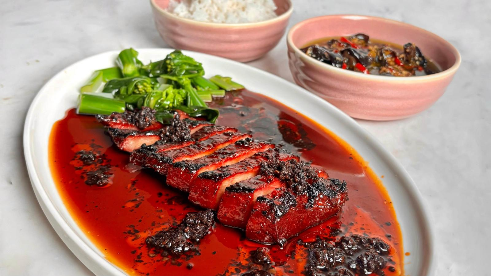

Opskriftsamling

Find inspiration til dit næste måltid
Udforsk vores opskrifter og find inspiration til både hurtige hverdagsretter og måltider, du kan bruge lidt ekstra tid på. Her finder du forskellige retter, der gør det nemmere at beslutte, hvad der skal på bordet.
Gå på opdagelse blandt opskrifterne, prøv noget nyt eller find en ret, der passer til det, du allerede har lyst til. Uanset om du leder efter noget hurtigt og enkelt eller vil gøre lidt mere ud af dagens måltid, kan du finde inspiration her.
Find dine favoritter, gem dem til senere, og gør det lidt nemmere at finde ud af, hvad du skal lave næste gang.


Cremet pasta med broccoli, ærter og citron
3,1 (96 anmeldelser)
Aftensmad

Lavet af Marcus Wareing

Perfekte ovnstegte kartofler


Scones med sennep, bacon og karamelliserede løg
4,4 (94 anmeldelser)
Aftensmad
Lavet af Marcus Wareing